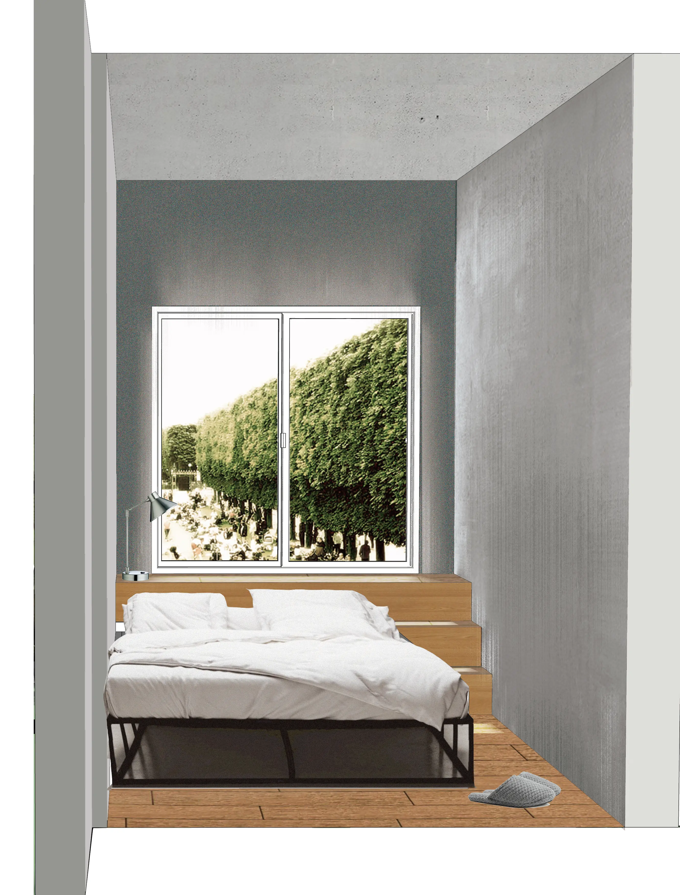
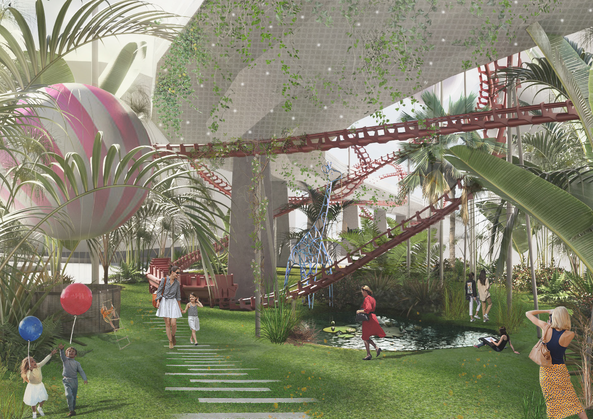
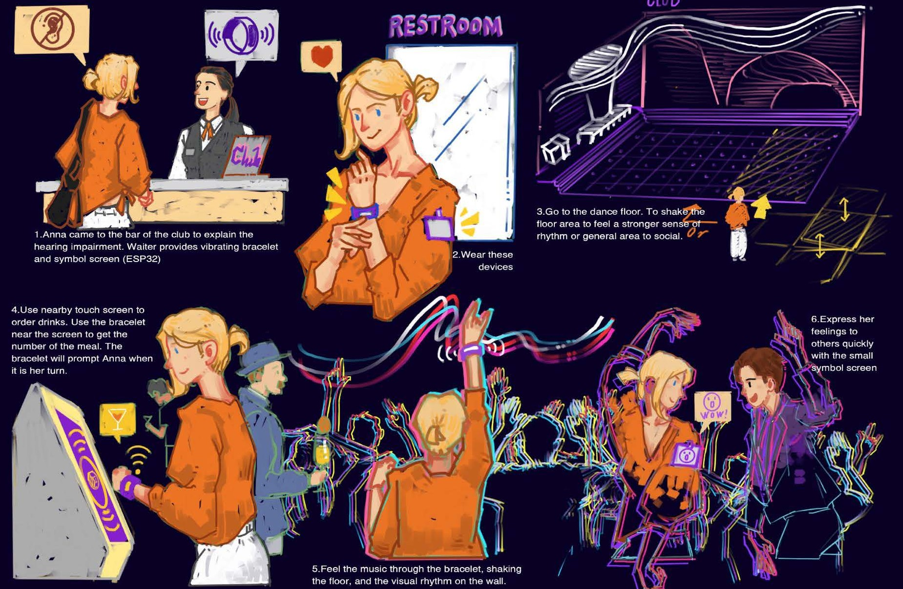

SELECTED PROJECTS
A Tale of Living
Habitat / Interior Design
Exploring housing models for digital nomads through psychological needs and minimum viable prototypes.

Cherry on the Cake
Urban Design / Urban Regeneration
Urban transformation of Milan's abandoned Scalo Farini rail yard through programmatic redistribution and spatial typologies.

Abracadabra
Landscape Design / Under-viaduct Activation
Transforming neglected under-viaduct "non-places" in Milan into sites of social participation and identity through spatial choreography.

FUN
Space Service Product & System / Inclusive Design
Multi-sensory design strategies transforming sound-centric nightclub spaces into inclusive environments for people with hearing impairments.
